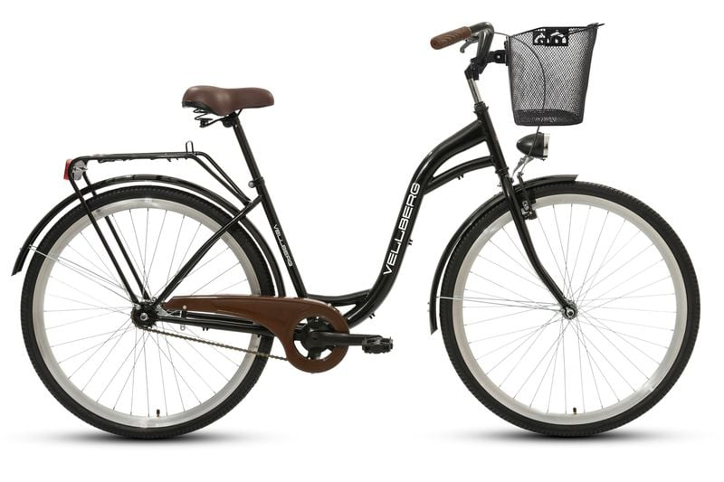
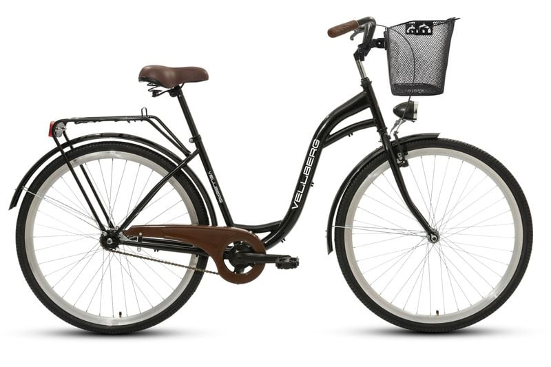

Rowery miejskie (City):
Idealne do codziennego transportu po mieście. Posiadają wygodną, wyprostowaną pozycję, błotniki, bagażnik i oświetlenie.
 Powrót do strony głównejDowiedz się jaki rower będzie najlepszy dla ciebie
Idealne do codziennego transportu po mieście. Posiadają wygodną, wyprostowaną pozycję, błotniki, bagażnik i oświetlenie.
 Powrót do strony głównej